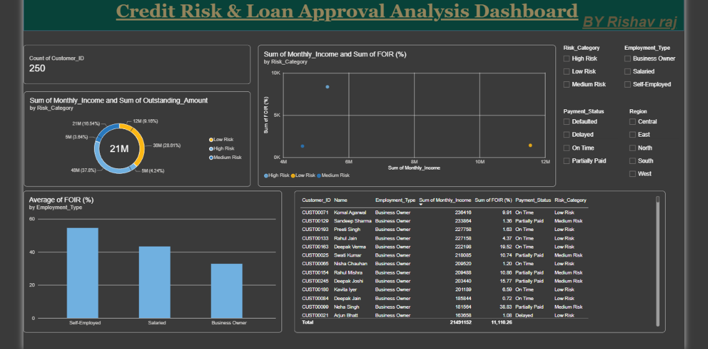

01
Credit Risk & Loan Approval Analysis Dashboard

I built a FOIR (Fixed Obligation to Income Ratio) scoring model from applicant-level data — income, EMI, employment type, and payment history — and classified every applicant into Low, Medium, or High risk, the way a credit analyst would before recommending approval.
The interesting finding: Self-Employed applicants carried the highest average FOIR (54.6%), but Salaried applicants accounted for more defaults. FOIR alone doesn't predict default — income stability matters just as much.
33.6%
applicants high risk
54.6%
avg FOIR, self-employed
32.9%
avg FOIR, business owners